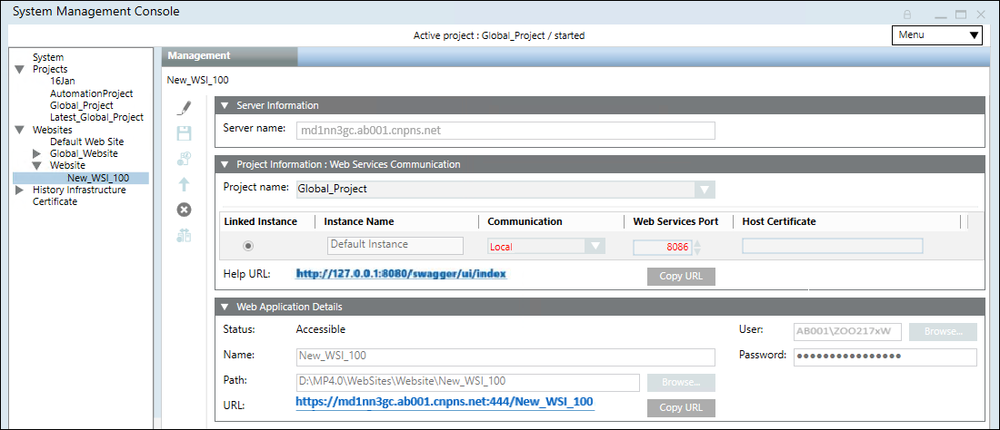
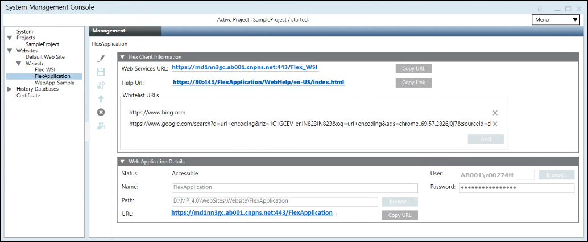

Create a Flex Client Application
- At least one website is available in the SMC tree and a web service communication project exists.
- In the SMC tree, select Websites > [Website name].
a. Select the Management tab.
b. Select the existing Web Services Application.
c. In the Web Application Details expander, click Copy URL. 
- Navigate to Websites > [Website name].
- Click
 , and thereafter select Create Flex Client Application.
, and thereafter select Create Flex Client Application. - In the Flex Client Information expander, do any of the following to configure the Web Services URL other than the default:
- Select the required Web Services URL from the drop-down list.
- Paste the copied Web Services URL link into the Web Services URL field, to link the Web Services URL created under another website.
- Type the Web Services URL in the format
https://[complete hostname]:[port]/[web service name] - (Optional) In the Whitelist URLs section of the Flex Client Information expander, do the following to whitelist an URL:
a. Click Add.
b. Enter a URL that you want to whitelist in the textbox. You can also add multiple URLs for whitelisting. To delete an already whitelisted URL, select it and click .
NOTE: Only secured (https) URLs can be added for whitelisting. - The whitelisted URL is embedded in Flex Client and displays in the Document Viewer.
- In the Web Application Details expander, do the following:
a. In the Name field, enter a unique name for the web application.
b. In the Path field, browse to select a destination for the website. The default path is [installation drive:]\[installation folder]\[WebSites]\[Web site name].
c. In the User field, browse to select a user for the website.
d. In the Select User dialog box, select the user for the web service application and enter the password.
NOTE: The Flex Client Application must be a member of the IIS_IUSRS group. If you select a user that is not a member of the IIS_IUSRS group, SMC prompts you to add it.
e. Enter the password. 
- Click Save
 .
. - A confirmation message displays.
- Click OK.
- The data is validated on successful creation.
NOTE: Any inconsistency with the Web Services URL, for example, if you have configured the Web Services URL which is not reachable or the Web Services URL is deleted, then the Web Service URL displays in red. You must click Edit and configure the working Web Services URL. Additionally, you also must ensure that the parent website is started.
and configure the working Web Services URL. Additionally, you also must ensure that the parent website is started.

NOTE:
If you want to add an additional language to the installation and the Flex Client Application was already created, you need to delete and recreate it. If you do not follow this procedure, the new language will not be recognized and the software label will be displayed instead.
NOTE:
If you want to create a second Flex Client Application, then you must create a new web service interface (See Setting up the Web Service Interface) and a new Flex Client Application and thereafter link this Flex Client Application to the newly created web service interface.